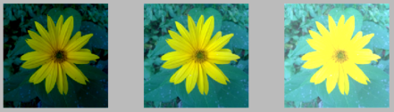

|
|
This whole document works with image in
Avariable.A=imread('kytka256.jpg');
{kind=link}
Image values to range from 0 to 1 in double
A = mat2gray(A);
imshow(A)
Moving colorful stripe

Commented parts are use to save animation to gif
Ag = rgb2gray(A);
figure; ax = axes;
stripe_height = 20;
runs = 10;% let animation run 10 times
% gifName = 'moving_stripe.gif';
% firstTime = 1;
% runs = 1;
for ii=1:runs
for i=1:stripe_height:size(Ag, 1)
currentImage = A;
currentImage(1:i, :, :) = repmat(Ag(1:i, :),[1 1 3]);
currentImage(i+stripe_height:end, :, :) = repmat(Ag(i+stripe_height:end, :),[1 1 3]);
imshow(currentImage,'Parent',ax);
pause(0.1) % pause for 0.1 sec
% [A_to_save,map] = rgb2ind(currentImage,256);
% if firstTime ==1%first frame is saved differently
% imwrite(A_to_save,map,gifName,'gif','LoopCount',Inf,'DelayTime',0.001);
% firstTime = 0;
% else
% imwrite(A_to_save,map,gifName,'gif','WriteMode','append','DelayTime',0.001);
% end
end
end
Repetitive image canvas

raster = ones (5);
raster([7:9,12,17:19,14]) = 0;
canvas = repmat(raster,20,20);
imshow(canvas)
Scaling Image
You can use both methods (by percentage and size in pixels) for scaling images up and down.
Scaling down

A_scaledDown = imresize(A,0.3);% 30 % of original size
imshow(A_scaledDown)
Scaling up

A_scaledUp = imresize(A,[300 400]);% in pixels. Does not keep proportions
imshow(A_scaledUp)
Croping Image

A_cropped = A(50:100,170:250,:);% colon means "in all channels"
imshow(A_cropped)
Replacing part of image with black color

A_replaced = A; %copy A, not overwrite
A_replaced(50:100,170:250,:) = 0;
imshow(A_replaced)
Brightness changes

A_brighter = A+0.3;
A_darker = A-0.3;
figure;
subplot 131;imshow(A_darker);
subplot 132;imshow(A);
subplot 133;imshow(A_brighter);
Display image histogram

imhist(A)